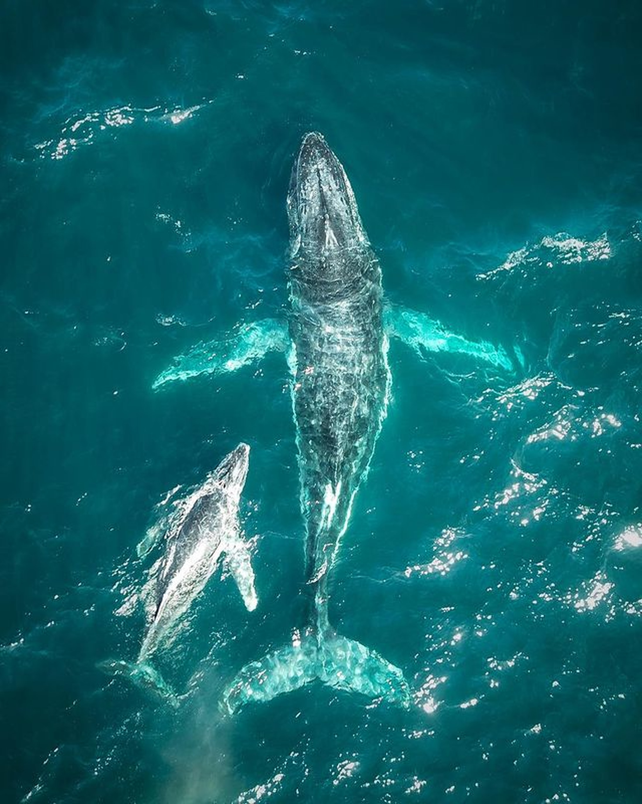
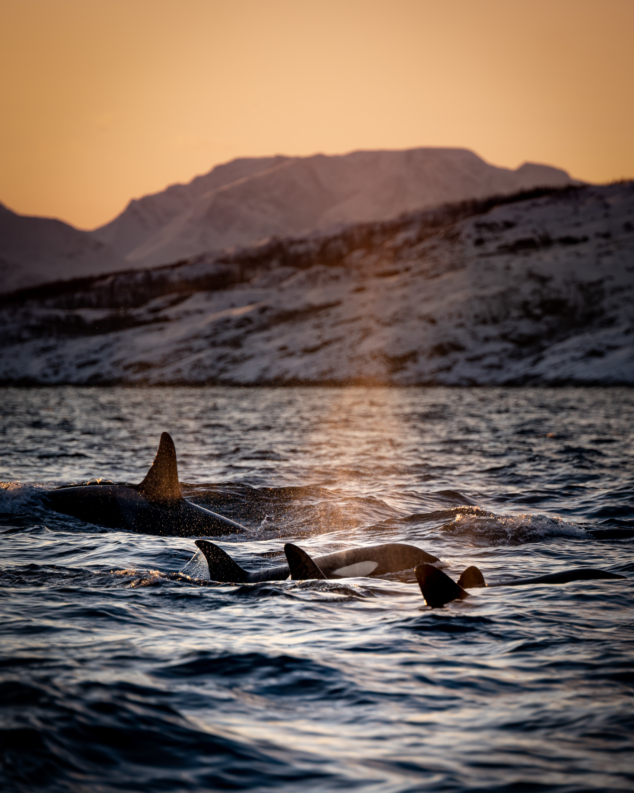

KONSERVASI
Orca diklasifikasikan sebagai "data deficient" oleh international
union for Conservation of Nature atau IUCN, ini artinya tidak ada
cukup informasi tentang populasi atau distribusi untuk membuat
penilaian yang akurat tentang status konservasi orca. Ini agak
mengejutkan mengingat betapa ikonik dan terkenalnya mamalia besar
ini, tetapi pada kenyataannya orca memang sangat sulit di pelajari
di alam liar. Di belahan bumi utara satu satu nya data yang dibuat
oleh IUCN adalah subpopulasi kecil orca yang hidup di selat
Gibraltar, Sun-Group yang terdiri dari sekitar 50 individu ini
terdaftar sebagai “Sangat Terancam Punah”. Karena sumber mangsa
utamanya yaitu tuna sirip biru yang juga terancam punah, populasi
mereka telah di perkirakan telah menurunn lebih dari 51% selama 39
tahun terakhir.

Populasi orca di belajahan bumi selatan pertama kali
di usulkan sebagai spesies terancam punah pada tahun 2001. Secara
historis populasinya diperkirakan telah berkurang sekitar 69
individu, karena perburuan antara tahun 1960-an dan 1974. Pada saat
peninjauan tahun 2013 IUCN memperkirakan Bahwa ada beberapa
kombinasi faktor, seperti menipisnya mangsa akibat overfishing dan
polusi laut yang menyebabkan pengurangan populasi sebesar 30% selama
3 generasi kedepan. Peninjauan terakhir terjadi pada tahun 2017,
yang mendokumentasikan populasi orca dibelahan bumi selatan adalah
sekitar 76 individu. Dan sementara populasi kimia dan penipisan
mangsa, merupakan ancaman terbesar bagi orca faktor faktor lain
seperti penangkapan dan perburuan, serta polusi suara juga berperan
menurunkan populasi orca? Apa tadi Polusi Suara? Kok bisa? Seperti
yang kita telah bahas, orca menggunakan suara untuk berkomunikasi,
bermigrasi dan berburu. Kebisingan dari mesin kapal laut dapat
mengganggu kemampuan ini atau memaksa mereka untuk bersuara lebih
keras ini menyebabkan mereka mengeluarkan lebih banyak energi,
sementara kapal yang bergerak cepat akan menimbulkan risiko orca
tertabrak kapal. Sebuah studi tentang populasi orca yang berkeliaran
bebas di lepas pantai Puget Sound telah menemukan bahwa orca di
ketahui meningkatkan amplitude panggilan mereka sebesar 1dB untuk
setiap tingkatan kebisingan suara sekitar mereka, penyesuaian vocal
ini, di duga meningkatkan perilaku peningkatan stress dan penurunan
komunikasi di antara anggota grup. Jadi buat kamu yang suka berisik
kamu secara tidak langsung telah menurunkan populasi orca diseluruh
dunia. Yang masih suka knalpot bising ganti sama yang orsinil.

MANUSIA
Tidak ada catatan kalau orca pernah membunuh...
See More

MENGAPA ORCA DISEBUT
PEMBUNUH
Meskipun sering di panggil paus pembunuh orca lebih masuk dalam
fam...
See More

BUDAYA ORCA
Orca selalu bekerja Bersama da...
See More